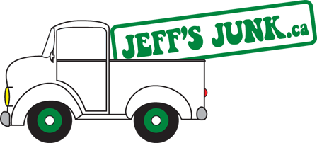

Warming up the board…
Reconnecting to dispatch — hang tight

Office Board · Barrie, ON
Jeff's Junk
Office Board
–
–
Bin Work Today
Crew · This Week
Operations
Bin Rental Rates
By city
Per drop · before tax · + $/tonne dump